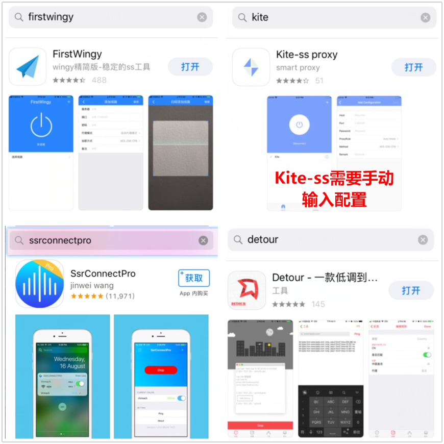
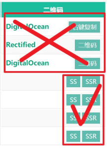
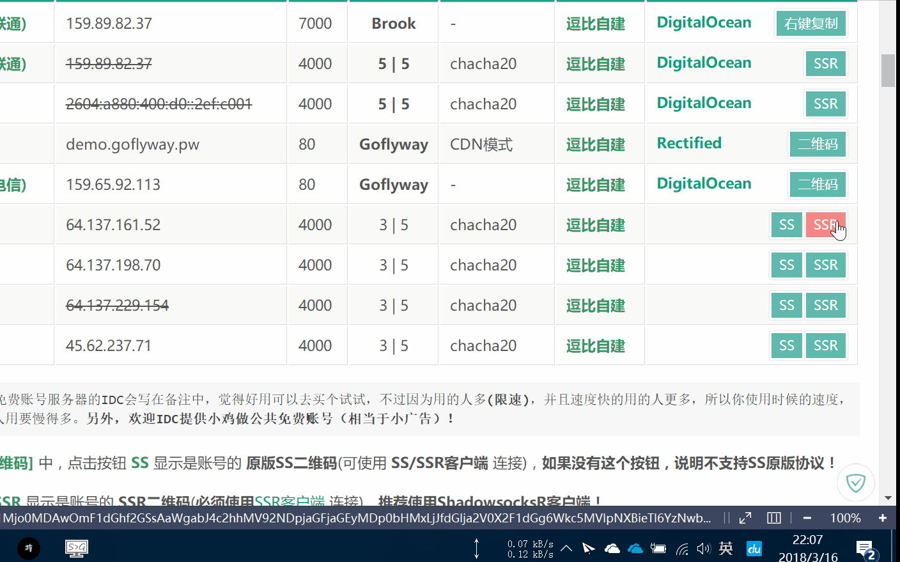
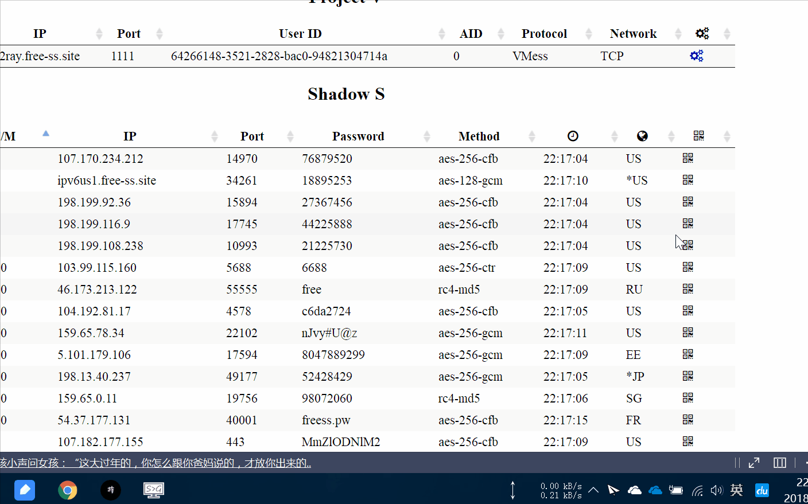
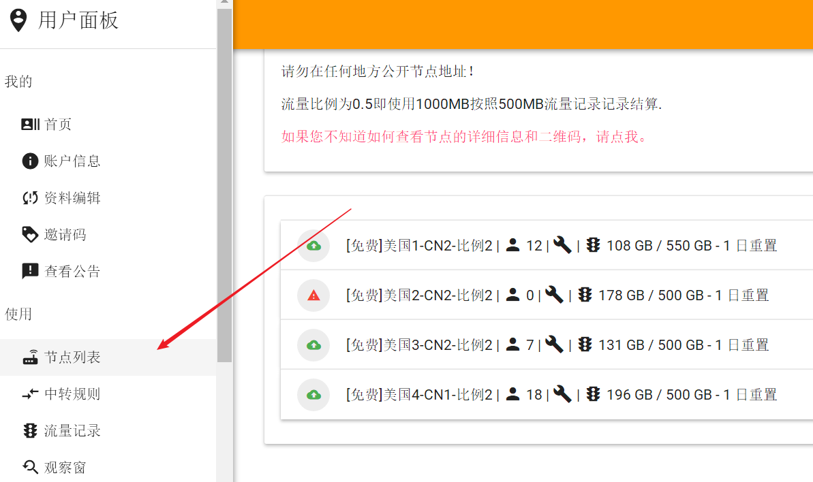
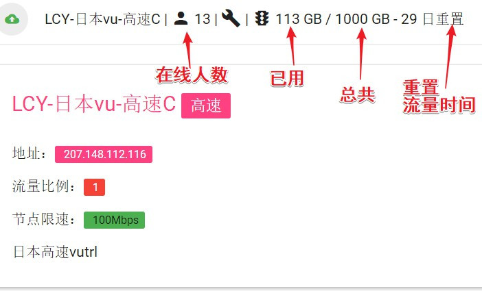
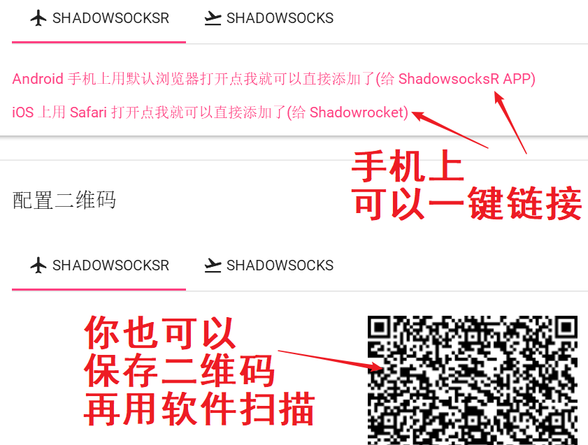

各种翻墙工具老是失效？
我一直觉得：授人以鱼不如授人以渔
软件随时失效，但方法长期有效！
如果想要稳定翻墙，
请耐心花十五分钟，看完此教程。
一共三步：
- 下载软件（各平台不同）
- 找到翻墙线路（二维码）
- 扫描二维码，线路即会自动配置
打开SSR+点击连接=翻墙成功！
看以下教程时遇到问题不要慌，公众号上给我发消息，说清楚你遇到的问题！我会及时回复你的。（如果暂时没人回复，那一般我是在上课）如果你很急，请发送“需要帮助”加群。公众号后台没办法一直在线，但我qq一直在线。
（如果你是安卓机，我的资源小站上搜集了数十款vρn，可以去免费下载！）
下面开始讲方法
电脑端、MacOS、安卓、IOS通用！
首先是科普一下什么是SSR
下面是转载的科普，大家自己选择性了解或者跳过，后面有结论
以前我们翻墙的时候最常用的就是Vρn了，而2年前，ss被开源(ss出现一年后，开源社区的破娃小姐姐在ss的基础上发布了ssr)，现在已经是最流行的翻墙方案。
下面我从三个部分做一个介绍：
1.什么是Vρn
2.什么是ss/ssr
-直连模式、PAC模式、全局模式
-客户端的选用
3.Vρn和ss/ssr的区别和优缺点
一、什么是Vρn
Vρn在很多人心目中就是用来翻墙的工具，其实不是。Vρn最主要的功能，并不是用来翻墙，只是它可以达到翻墙的目的。Vρn–虚拟专用网络，它的功能是：在公用网络上建立专用网络，进行加密通讯。在企业网络和高校的网络中应用很广泛。你接入Vρn，其实就是接入了一个专有网络，你的网络访问都从这个出口出去，你和Vρn之间的通信是否加密，取决于你连接Vρn的方式或者协议。
二、什么是ss/ssr
ss：ss作者是clowwindy，大约两年前，他自己为了翻墙写了shadowsocks，简称ss或者叫影梭，后来他觉得这个东西非常好用，速度快，而且不会被封锁，他就把源码共享在了github上，然后就火了，但是后来作者被请去喝茶，删了代码，并且保证不再参与维护更新。现在这个好像是一个国外的大兄弟在维护。
ssr：在ss作者被喝茶之后，github上出现了一个叫breakwa11(破娃)的帐号，声称ss容易被防火墙检测到，所以在混淆和协议方面做了改进，更加不容易被检测到，而且兼容ss，改进后的项目叫shadowsocks-R，简称ssr，然后ss用户和ssr用户自然分成了两个派别，互相撕逼，直到前阵子，破娃被人肉出来，无奈之下删除了ssr的代码，并且解散了所有相关群组。
ss和ssr它的原理都是一样的，就是socks5代理，。socks代理只是简单的传递数据包，而不必关心是何种协议，所以socks代理比其他应用层代理要快的多。socks5代理是把你的网络数据请求通过一条连接你和代理服务器之间的通道，由服务器转发到目的地，这个过程中你是没有通过一条专用通道的，只是数据包的发出，然后被代理服务器收到，整个过程并没有额外的处理。通俗的说，现在你有一个代理服务器在香港，比如你现在想要访问google，你的电脑发出请求，流量通过socks5连接发到你在香港的服务器上，然后再由你在香港的服务器去访问google，再把访问结果传回你的电脑，这样就实现了翻墙。但是，要注意：ss/ssr只是代理 socks5 ， 其它方式实现的不进行代理，如：QQ 基于 socks5 通信，就能够进行代理，并且改变 登录地址，而其它软件不是基于 socks5 代理就无法实现代理。
1.直连模式就是流量不走代理 ，PAC模式简单说就是国内地址不走代理，国外走代理，全局模式就是不管国内国外，所有流量通过代理服务器访问
2.下载ss或者ssr客户端推荐去github或者https://shadowsocks.org/en/index.html这里去下载，或者在你购买ss/ssr服务商的网站下载
三、Vρn和ss/ssr的区别和优缺点
通过上面的介绍，其实基本已经能看出Vρn和ss/ssr的区别了，那么他们到底孰优孰劣。
因为Vρn是走的专用通道，它是用来给企业传输加密数据用的，所以Vρn的流量特征很明显，以openVρn为例，更详细的在这里不说了，流量特征明显，防火墙直接分析你的流量，如果特征匹配，直接封掉。目前就翻墙来说，PPTP类型的Vρn基本死的差不多了，L2TP大部分地区干扰严重很不稳定。
ss/ssr的目的就是用来翻墙的，而Vρn的目的是用来加密企业数据的，对于Vρn来说安全是第一位的，而对于ss/ssr来说穿透防火墙是第一位，抗干扰性强，而且对流量做了混淆，所有流量在通过防火墙的时候，基本上都被识别为普通流量，也就是说你翻墙了，但是政府是检测不到你在翻墙的。两者的出发点和着重点就不同，ss/ssr更注重流量的混淆加密。如果要安全匿名上网，可以用Vρn+tor或者ss/ssr+tor。
而安全性方面还要补充的一点就是，国内Vρn服务商，政府是很容易拿到他们的服务器日志的，如果他们真的这样做了，你翻墙做了什么，一览无余。
总结一下：
就翻墙来说，推荐大家使用ss/ssr，ss/ssr的成本是非常低的，低至一年25块钱（也许还有更低的只是我没发现？），Vρn的价格，用过的都知道。
而且就翻墙效果来说大部分地区ss/ssr是比Vρn好的。
以上部分转载自MarvelDead 胡艺宝的博客：
[全文地址](http://blog.csdn.net/marveldead/article/details/78495583)
##总之就是##
我们只需要一个能解析SSR线路的软件(这种软件很多)
然后再需要各种SSR线路(二维码即SSR线路转换过来的)
软件不用换！
后期只用更新线路就行！
好了下面请跟着我一步一步来
第一步：下载SSR客户端
IOS：
1.四个国内可免费下载，且支持解析SS代理的软件

以上四款都只支持SS线路（SSR线路和SS线路实际使用中其实差别不大）
2.国外支持解析SS(R)线路的软件（以下软件在中国区被屏蔽，需要用美国id到美国区下载！)
用下面我提供的美国区帐号登陆AppStore进行下载
备注：搜索框中只填写“potatso”进行搜索，不然搜索不到potatso
下载时注意 请勿登陆icloud！否则后果自负！
帐号：nxc7836@icloud.com
密码：DANdan123456
下载完后请主动退出注销AppStore账户！谢谢配合！
如果账号失效无法登陆，请联系我
Windows
官方下载地址：https://github.com/shadowsocksr-backup/shadowsocksr-csharp/releases 
Mac
官方下载地址：https://github.com/shadowsocks/ShadowsocksX-NG
安卓
官方下载地址：https://github.com/shadowsocksr-backup/shadowsocksr-android/releases
你在官方页面下载速度可能会很慢
可以去我的资源小站下载（点击右方链接进入我的小站）：阿虚同学的储物间
第二步：找SSR线路（二维码）
无需注册：逗逼大佬: https://doub.ws/sszhfx/
这个用的人应该很多，线路失效较快，3天更新一次，只建议临时使用,寻求稳定请使用注册类站点
注意：逗比自建的免费账号限速 500kb/s、限制设备数 100个，所以遇到时能用时不能用，那么可能是设备数限制满了。（限速已经从之前的1mb/s上调到500kb/s了）
- 第一次看教程，请按下图，找到二维码
- 如果你是手机用户，请先截图保存二维码（尽量把二维码放大）
ssr代理软件只能使用ssr或ss线路，找二维码时请注意不要点错二维码


无需注册：免费上网账号: http://free-ss.site/
速度快，失效快，更新快(大概六小时更新一次)，只建议临时使用,寻求稳定请使用注册类站点
- 第一次看教程，请按下图，找到二维码
- 如果你是手机用户，请先截图保存二维码（尽量把二维码放大）

无需注册：Free-ss：https://get.freess.today
线路更新快，每天一更，寻求稳定请使用注册类站点
- 第一次看教程，请按下图，找到二维码
- 如果你是手机用户，请先截图保存二维码（尽量把二维码放大）

免费注册类站点：酸酸乳：https://anythink.info**
公共邀请码:https://anythink.info/code
自用，速度快！可看YouTube！流量永不清零。
初始10G(用别人生成哒邀请码注册可获得50G初始流量)每次签到300-500MB,系统自动清理30天内不签到或不连接使用，且账户等级为0的用户。
线路很多：英国、纽约、日本、新加坡…
新手请一定看这里：酸酸乳此类站点，线路使用方法如下



更多酸酸乳类注册站点，请点击文章底部链接
另外，如果你需要更快速的线路，
1.购买上面站点的VIP线路
（建议短期购买，不做长期投入）
2.购买下面的付费线路
（我没使用过，只给出官网地址）：
SScenter https://sscenter.xyz/
小飞机 http://www.xiaofeiji.pro/
Kolast http://koleap.com/
极速SS https://www.jsss1.top/
加速度 http://su.36fy.com/
飞天猪网络https://www.fiypig.com/
第三步：如何使用？
看这一步时请确保你已经安装好软件，并且找到线路二维码了
各平台具体教程，请点击下面的链接
IOS SSR使用方法
安卓 SSR使用方法
Windows SSR使用方法
MAC SSR使用方法
使用方法都很简单，看完教程还有问题的同学，请在我公众号内给我发消息
就教到这里吧，如果还有问题直接在微信公众号上问我！
或者公众号内发送“需要帮助”
最后祝愿大家，翻墙成功！
毕竟…
墙外的世界，更精彩！
- 请大家记住：
- 需要最新教程请在我的公众号里回复：翻墙